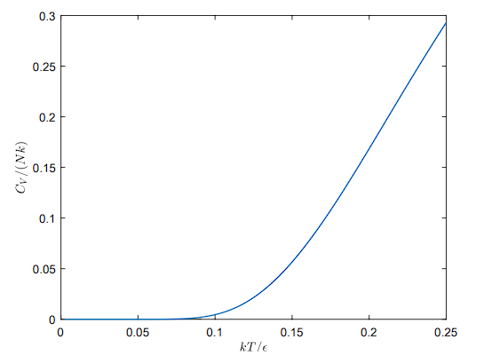
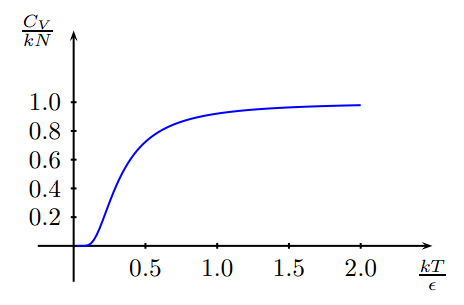
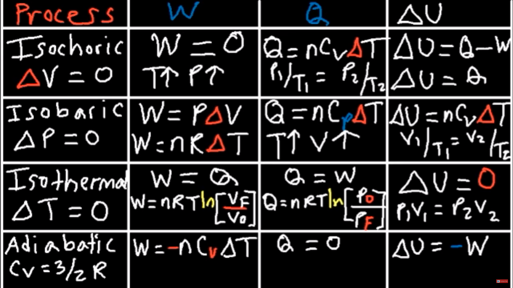
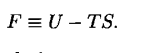
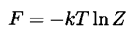
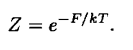
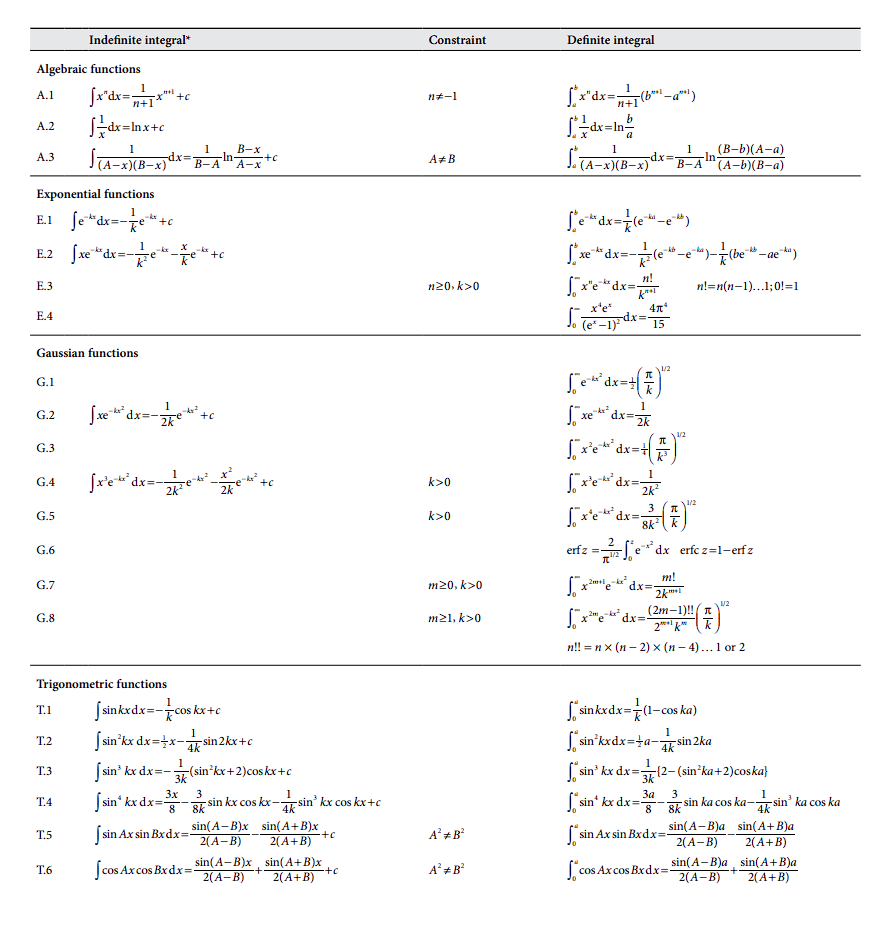
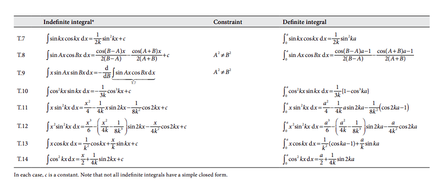
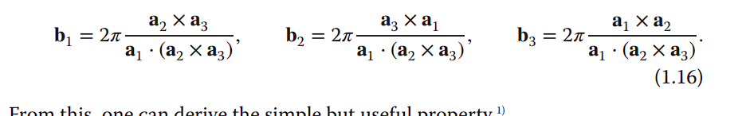

Statistical physics Handbook#
This handbook is written December 2023 for the course: “Statistical physics and solid state physics” The structure of each section will be as follows:
Reference guide ie. materials used for this section.
When more than one ref. the bold ref is the better one.
Typical questions with generic answers. If maths are used, given example of calculations.
The exam will be with all aids allowed except internet. This guide will therefore use no internet or communications.
Table of Contents#
Solid State Physics#
This part is for the solid state physics part of the course but will definetely be comparable to the whole course in general
Crystal Structure#
When drawing a lattice please refer to:
‘Solid State Physics - Phillip Hoffman’ pp. 1-18
‘Solid State chemistry and its Applications’ pp. 12-14
The reciprocal lattice#
The link between normal space lattice and reciprocal space lattice lies in the miller index, which can be used in calculations from diffraction experiments. The miller indices are the reciprocal values of the normalized coordinates in a unitcell.
When drawing a reciprocal lattice please refer to:
‘Solid State Physics - Phillip Hoffman’ pp. 11-18
to calculate reciprocal vectors from real vectors use the function:
res = calc_rec_lat(a1,a2,a3)
print(res)
When answering True or False statements please refer to the following:
‘Solid State Physics - Phillip Hoffman’ pp. 11-18
Especially Equations: 1.12-1.18
Remember to take the crystal structure into consideration ie. the cubic cell will give rise to all sides being the same and thus some of the reciprocal vectors being the same.
Heat capacity#
EoS is testing
Lipsum
Lattice vibrations#
Lipsum
Bloch theorem#
Lipsum
Metallic conduction#
Lipsum
Nearly free electron model#
Lipsum
Metals and insulators#
Lipsum
Semiconductors#
Lipsum
Curie Paramagnetism#
Lipsum
Superconductivity#
Lipsum
Lattice waves#
Lipsum
Density of states#
Lipsum
Band structure#
Lipsum
Magnetism#
Lipsum
Lattice#
Lipsum
X-Ray diffraction#
Lipsum
Periodic boundary conditions#
Lipsum
Vibrations#
Lipsum
Interatomic potential#
Lipsum
Electronic states in crystals#
When deriving the different electronic states for a polarizing defect in a crystal try to consider the polariation vectors as one matrix instead, and then use sympy to print the product bewteen the energy and the polarization vector. Then to get the degeneracy you just have to count how many outcomes of each.
When deriving the partition function use the fuynction partition_func_template from the module PartitionFunctions and use sympy from there to manipulate the expreession. if .subs() does not work, just rewrite the expression manually and continue from there.
If doing it manually please refer to trigonometric identities
Thermal equilibrium#
Lipsum
Site on surface#
Statistical Physics#
This part will tackle the statistical part of the course but will definetely be usefull for other things.
Entropy of a system#
For all the factorials it is very usefull to use Stirlings approximations:
These approximations are used without warning so keep up :P
Entropy of Einstein solid#
“An introduction to thermal physics” by Daniel Schröeder, pp. 74-77
AnswersC.pdf problem 2.30
The appropriate approximations should be considered.
if given approximations, write the logarithms out, so python can handle the numbers.
for similar problems as problem 2.30 use the function ES_entropy_two() from the module SystemEntropy.py
Limit of \(q \ll N\)#
When finding a formula for the temperature of an Einstein solid refer to AnswersC.pdf problem 3.5 which also solves for the energy to give: $\(U = N \epsilon \cdot e^{\frac{-\epsilon}{k T}}\)$
Calculating the heat capacity of an Einstein solid please refer to ‘AnswersC.pdf’ which tells that it is calculated by:
it could also be written as:
A sketch of the heat capacity can look like this:

Entropy of ideal gas#
Symbolic manipulation#
Use ‘AnswerC.pdf’ problem 2.34 when deriving \(\Delta S = \frac{Q}{T}\) for an isothermal process with U fixed.
Use ‘AnswerC.pdf’ problem 3.25 when:
deriving an expression for he entropy of an Einstein solid as a function of N and q(where N is number of oscillators and q is number of energy units).
calculating the temperature of an Einstein solid as a function of its energy
deriving an equation for the heat capacity, by using the energy as a function of temperature.
Checking the limits of heat capacity at \(T \rightarrow \infin\).
showing a graph of heat capacity as a function of T: 
Two-state Paramagnet#
Symbolic manipulation#
When expressing the Entropy as a function of temperature please refer to ‘AnswersC.pdf’. This also checks for the behavior as \(T \rightarrow 0\) and \(T \rightarrow \infin\).
The deriviation is rather long, but hang in there :P
Microstates of a system#
The problems of week 36 is mostly about einstein solids and a two state paramagnet
Miscellanious microstate problems#
A system which consists of two independent variables has a total number of microstates. The number of microstates can be described by the product of the amount of microstates for the two individual variables. This is comparable to a system of two Einstein solids.
Einstein solids#
“An introduction to thermal physics” by Daniel Schröeder, pp. 52-65
for calculations of two equal einstein solids in one system use the module MathCalc
with the function two_einstein which will return the number of macrostates, number of microstates,
probability of one solid having all of the energy, and the probability of the two solids sharing it equally.
If faced with two solids which are not equal use the function binom from the module scipy.special
to calculate the binomial coefficient. remember that the total number of microstates is the product of the number of microstates of the individual solids. and the probablity is the number of microstates for a given state divided by the total number of microstates.
from scipy.special import binom
Partition function#
Problems and answers#
‘ProblemsE.pdf’ and ‘AnswersE.pdf’ problem E1
‘ProblemsD.pdf’ and ‘AnswersD.pdf’ problem 6.16
Average energy#
Proving the average energy from the partition function, when a system is in equilibrium with a resevoir at temperature T.
‘AnswersD.pdf’ problem 6.16
The average energy is the sum of all the different state energies weighted by their probabilities and for a symbolic deriviation use the following:
from PartitionFunctions import PF_average_energy, PF_heat_capacity
PF_average_energy(test_func,beta)
PF_heat_capacity(test_func,beta)
!!Beware!! when using these functions be sure that you are using the correct assumptions. The script cannot make assumptions based on things given in the text, so it is necessary to incorporate assumptions or simplifications into your expression before using it
This can be done by incorporating predicates when defining symbols as an example:
from PartitionFunctions import PF_average_energy, PF_heat_capacity
from sympy import symbols
x, y, z = symbols('x y z', positive = True ) # for positive values - useful for constants
For the easiest application of this use the simplify function from the sympy module to make the initial expression easier to manipulate manually and then rewrite them into your own calculation script. If simplify does not cut it, try with collect, and if it still does not work… Good luck
‘AnswersD.pdf’ Last 4 problems gives a not so good description of how to handle manipulations like these.
Fraction of upper state / lower state#
When determining the fraction of probabilities, beware of the question describtion. Is it asking for the number of particles of higher energy per particles of lower energy particles or is it asking for the percentage of particles in the specific state.
Either way use Frac_partition_funcs(E_difference, T) from the PartitionFunctions module.
Single harmonic Oscillator#
When working with a single oscillator it is the same approach as for anything else. It just takes advantage of the fact that the partition function does not change depending on the energy, and therefor is a very nice place to start when calculating the average energy of a system, and then using that average to get the heat capacity. When working symbolically with this please refer to the module PartitionFunctions and use the functions
from PartitionFunctions import PF_average_energy, PF_heat_capacity
PF_average_energy(test_func,beta)
PF_heat_capacity(test_func,beta)
I would recommend using the latter of the two functions, because it makes use of the average energy function and there displays the following results:
Average energy in terms of \(\beta\)
Total energy for N particles in terms of \(\beta\)
Total energy for N particles in terms of \(\frac{1}{k \cdot T}\)
Heat Capacity at constant volume in terms of \(T\)
Heat capacity evaluated at both \(T \rightarrow 0\) and \(T \rightarrow \infin\)
Be aware of \(\beta\) and make sure that it is written properly into the first function, so it is not confused as \(\frac{h f}{\beta}\) which would be equal to \(h f k T\) and not \(\frac{hf}{kT}\) as \(\beta = \frac{1}{kT}\)
molecular clouds#
refer to ‘AnswersD.pdf’ problem 6.12 when in equilibrium
Remember to change use the correct boltzmann constant.
Energies of a system#
Free Energy and Chemical Thermodynamics#
When asked about any kind of free energy and thermodynamic identities please refer to:
“An introduction to thermal physics” by Daniel Schröeder, pp. 156-166
To create an identity for a given free energy, write it up in small differences i.e. the actual thermodynamic identity:
Then use rewrite your free energy change with \(dU\). Now use this identity to create partial derivatives by manipulating the expression. Remember to write out which variables you are holding constant.
“An introduction to thermal physics” by Daniel Schröeder, pp. 161-162
When showing wether your free energy tends to increase or decrease at equilibrium, write up the total entropy in terms of the system entropy and resevoir entropy. then rewrite the resvoir entropy using the thermodynamic identity and consider which small changes are taking place. From there on you just simplify and rewrite and simplify and rewrite and simplify and rewrite… until you are satisfied with the outcome and you have the total entropy in terms of your free energy.
If working with a system where no particle is allowed to leave the system, you can use the following equations to simplify your working progress.

Ideal gas calculations#
Refer to the following when working with ideal gas:
“An introduction to thermal physics” by Daniel Schröeder, pp. 6-14
When calculating the volume for an ideal gas, at room temp, and 1 atm use the function volume_id_gas(N=number of molecules) if calculating the volume per molecule divide by N. remember to state, which room temperature, that is used.
When manipulating functions refer to the following table for different functions:
PV diagrams#
“An introduction to thermal physics” by Daniel Schröeder, pp. 17-28
“AnswersA.pdf” from weekly problems
When calculating different quantities such as Work done on the system refer to the Table of equations
When determining the sign of the quantities refer to the following table:

Helmholtz free energy and ideal gas#
When working with Helmholtz please please please…just give up…:

definition of the free energy

Giant leap to this clusion. Book says intuitive… i don’t think so…

Also this, from the ‘‘intuitive leap’’
Also some references:
“An introduction to thermal physics” by Daniel Schröeder, pp. 251-255
‘ProblemsE.pdf’ and ‘AnswersE.pdf’ problem E2
Remember that the partition functions oftentimes are not written, and \(Z_i\) is just a placeholder in the problem until given the actual function. This is true for Ideal Gasses at least.
If you are ver very doven just use te function symbolic_F_free_energy(num_particles = 1, stirling_approx = True) from the module PartitionFunctions.
Just remember that the number of particles is not the number of different atoms, but particles as a whole. that means for two atoms A and B creating a molecule AB thhe number of particles is now three and not two. If ou are only interested in the free energy as a function of PF set stirling_approx = False to get the precise energy. if this function is displayed using a \(\Gamma\) function remember that \(\Gamma (n+1) = n!\)
Maxwell distribution#
“An introduction to thermal physics” by Daniel Schröeder, pp. 244-246
Remember when manipulating the distribution functions to write the integral in terms of \(\exp{-x^2}\) and not \(\exp{\frac{-mv^2}{kT}}\) that is rewrite the expression with \(x = v \cdot \sqrt{\frac{m}{kT}}\)
This manipulation will allow for the use of the common integral table:


Common integral Table. taken from Atkins ‘Physical Chemistry’ pp. 862-863
Blackbody radiation#
Lipsum
Thermodynamic identity#
Lipsum
Magnetization of a system#
Lipsum
Debye solid calculations and deriviations#
Lipsum
Adsorption sites#
Lipsum
EoS Spin-1/2 Spin-1 particles#
Lipsum
Thermal and Diffusive equilibrium#
Chemical potential#
Einstein Solid#
Deriving the chemical potential for an Einstein Solid with, \(q \ll 1\) and \(N \ll 1\) is done in ‘AnswersD.pdf’ problem 3.36. The definition of the chemical potential is used because no other information was given.
Heat capacity#
Lipsum
Relevant math#
Random distribution#
When finding how many different distributions there are of a deck of cards the module: Mathematics
rand_distribution(N='number of distinguishable inputs')
When N >> 1 Stirlings approximation is valid.
stirling_app(N='number of distinguishable inputs')
stirling_app_ln(N='number of distinguishable imputs')
when calculating the number of different outcomes for a smaller population than the total use the scipy.stats module, and please refer to the Statistics course book for examples of use.
Combinatorics#
when calculating number of outcomes refer to the module MathCalc
Table of equations#
function |
Constants |
Context |
Reference |
|---|---|---|---|
PV = NkT |
k |
Ideal gas law |
eq. 1.5 Intro Thermal Physics |
 |
k |
… |
… |
Identity |
Formula |
Explanation |
|---|---|---|
Pythagorean identity |
\(\sin^2 \theta + \cos^2 \theta = 1\) |
Follows from the Pythagorean theorem applied to a unit circle |
Reciprocal identity |
\(\sin \theta = \frac{1}{\csc \theta}\) |
Follows from the definition of cosecant as the reciprocal of sine |
Quotient identity |
\(\tan \theta = \frac{\sin \theta}{\cos \theta}\) |
Follows from the definition of tangent as the ratio of sine and cosine |
Sum of angles identity |
\(\sin(\alpha + \beta) = \sin \alpha \cos \beta + \cos \alpha \sin \beta\) |
Follows from the addition formula for complex exponentials |
Double angle identity |
\(\cos(2\theta) = \cos^2 \theta - \sin^2 \theta\) |
Follows from the sum of angles identity with \(\alpha = \beta = \theta\) |
Half angle identity |
\(\sin^2 \frac{\theta}{2} = \frac{1 - \cos \theta}{2}\) |
Follows from the double angle identity and the Pythagorean identity |
Euler’s formula |
\(e^{i\theta} = \cos \theta + i \sin \theta\) |
Establishes the fundamental relationship between the complex exponential function and the trigonometric functions |
Euler’s identity |
\(e^{i\pi} + 1 = 0\) |
Follows from Euler’s formula with \(\theta = \pi\) |
Euler’s relation Non-Imaginary |
\(cosh = \frac{e^{\theta} + e^{-\theta}}{2}\) |
Definition of hyperbollic relation between trigonometry and Eulers formula |
Definition list and abreviations#
- UC
Unit Cell
- EoS
Energy of states